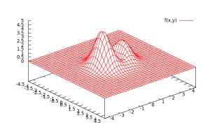
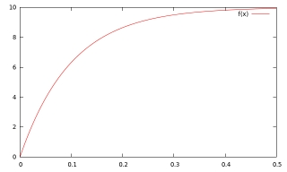
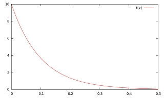
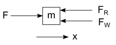
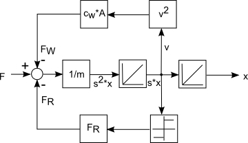
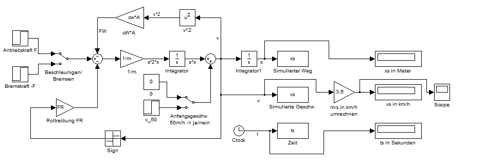
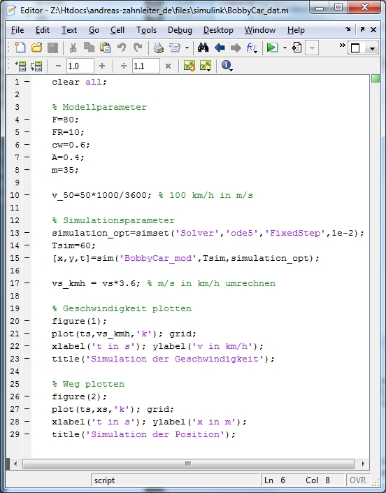
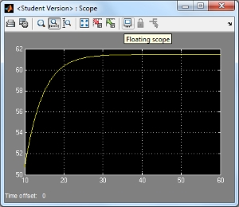
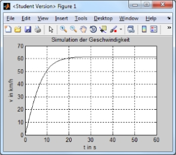
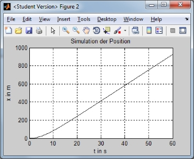

Scientific Computing & Visualization
Plotten mit Gnuplot | Modellierung und Simulation mit Matlab/Simulink
In der Technik und in den Naturwissenschaften trifft man auf viele verschiedene Modelle, an denen man verschiedene Berechnungen durchführen möchte um Voraussagen für das Verhalten eines Systems unter bestimmten Bedingungen machen zu können. Hier möchte ich zeigen wie einfach dies sein kann.
Plotten mit Gnuplot
Gnuplot ist ein kostenfreies wissenschaftliches Plotprogramm. Hier findet ihr weitere Infos.
Beispiel: Sinus-Kurve mit Amplitude a=5
gnuplot> a=5.0
gnuplot> f(x)=sin(x)*a
gnuplot> plot f(x)

Beispiel: 3D-Plot einer Funktion mit Gitternetzlinien
set hidden3d
set isosamples 40
set xrange [-4.5:4.5]
set yrange [-4.5:4.5]
set zrange [0.0:5.0]
set xtics 0.5
set ytics 1.0
set ztics 0.5
set view 40,50,1.0,1.5
f(x,y)=(x**2+3.5*y**2-y)*exp(1-(x**2+y**2))
splot f(x,y)

Aufladen eines Kondensators
U=10V, R=100Ohm, C=mF
e=2.71828
U=10
R=100
C=0.001
set xrange [0:0.5]
set yrange [0:10]
f(x)=U*(1-e**(-x/(R*C)))
plot f(x)

Entladen eines Kondensators
U=10V, R=100Ohm, C=mF
e=2.71828
U=10
R=100
C=0.001
set xrange [0:0.5]
set yrange [0:10]
f(x)=U*e**(-x/(R*C))
plot f(x)

Modellierung und Simulation mit Matlab/Simulink
Nehmen wir mal an wir haben ein Bobbycar (Masse m = 35 kg inkl. Fahrer) so aufgerüstet, dass es mit der maximalen Antriebskraft von F = 80 N beschleunigt werden kann. Jetzt möchten wir in einer Simulation herausfinden, wann sich welche maximale Geschwindigkeit einstellt. Um die Simulation etwas interessanter zu gestalten, soll auch die Rollreibung und der Luftwiderstand berücksichtigt werden. Anbei nochmal die Eckpunkte:
Gesamtmasse m = 35kg
max. Antriebskraft F = 80 N
Rollreibung
Luftwiderstand mit Luftwiderstandsbeiwert
Querschnittsfläche des Bobbycars
Das folgende Schaubild zeigt das Bobbycar, das von der Kraft F in x-Richtung beschleunigt wird. In entgegengesetzter Richtung wirken Rollreibung und der Luftwiderstand, die resultierende Kraft ist dann kleiner als die Antriebskraft F. Hinweis: Die Beträge der Vektoren lassen keinen Schluss auf die tatsächlichen Verhältnisse zu.
Die Antriebskraft gemindert um Rollreibung und Luftwiderstand ist gleich dem Produkt aus Masse und Beschleunigung:
Nach etwas Umstellung erhalten wir folgende Gleichung:
Wie wir erkennen, handelt es sich um eine Differentialgleichung 1. Ordnung. Nach der Laplace-Transformation erhalten wir folgende Gleichung:
Auf der rechten Seite stört uns noch die Masse, deshalb dividieren wir auf beiden Seiten durch m und erhalten:
Mit Hilfe dieser Gleichung können wir nun ganz einfach folgendes Blockschaltbild, gemäß den Regeln der Systemtheorie, aufstellen:
Ein mögliches Simulink-Modell könnte demnach wie folgt aussehen (es geht etwas über die Aufgabenstellung hinaus):
Die Modellparameter werden in einer separten Skriptdatei festgelegt. Auch die Steuerung der Simulation das Plotten der Ergebnisse übernimmt das Skript:
Auswertung der Geschwindigkeit und des zurückgelegten Weges:
  